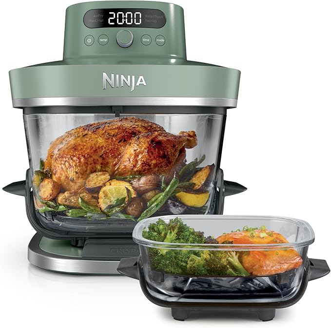

Anzeige
Würziger Penne-Bolognese-Auflauf aus der Ninja CRISPi
Würziger Penne-Bolognese-Auflauf aus der Ninja CrispiPro: Penne, Hackfleisch mit Salsa-Soße, Cheddar und eine goldbraune Käsekruste.
- 6 Zutaten
- 7 Schritte
Zur Zubereitung Video ansehen ↗
Zutaten

AnzeigeNinja CRISPi PRO XL · MoosgrünDie Glas-Heißluftfritteuse aus dem Video.Produkt ansehen ↗Als Amazon-Partner verdiene ich an qualifizierten Verkäufen.
Zubereitung
- Die Penne nach Packungsanleitung kochen und abgießen.
- Das Hackfleisch in einer Pfanne krümelig anbraten, bis es vollständig durchgegart ist.
- Die gekochten Penne in den Behälter der Ninja CrispiPro geben.
- Vier Scheiben Cheddar auf den Nudeln verteilen.
- Das vorbereitete Hackfleisch mit der Salsa-Soße vermischen und darübergeben.
- 100 ml Kochsahne hinzufügen und mit geriebenem Käse bestreuen.
- Bei 180 °C ca. 15 Minuten überbacken, bis der Käse geschmolzen und goldbraun ist.